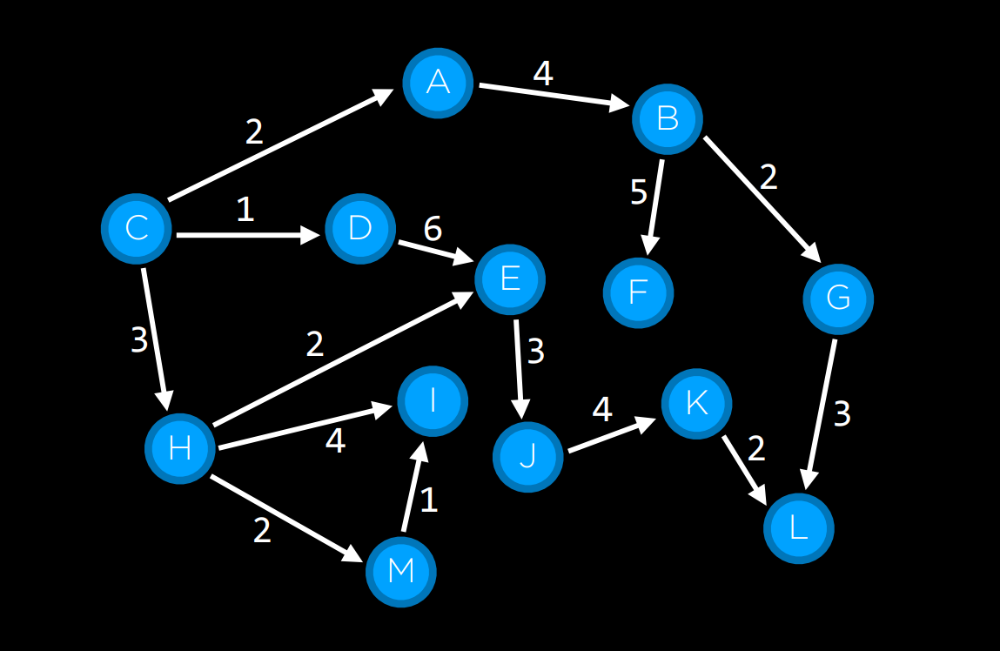
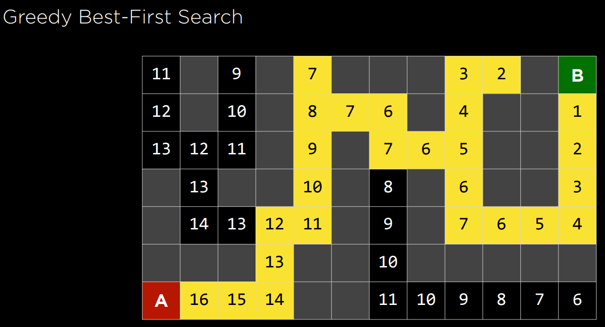
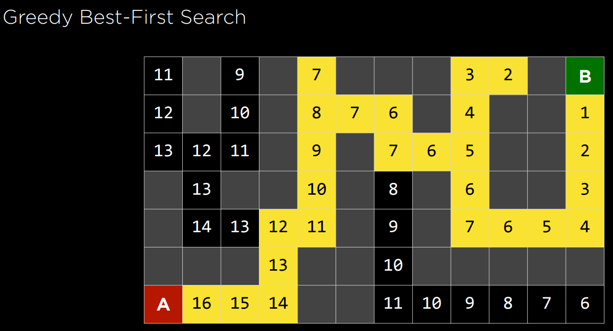
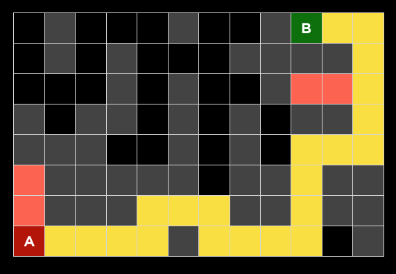
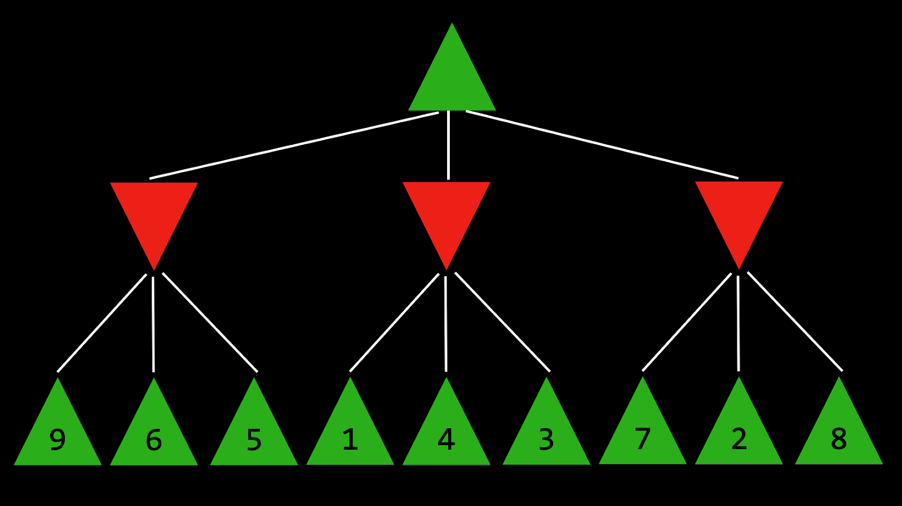

CS50AI Harvard
Arquivos e projetos do curso CS50AI 2024
VoltarConteúdo disponível
Github do projeto
Sumário:
0.Search:
Problemas de busca envolvem agente (agent) que recebe estado (state) inicial e estado objetivo, retornando solução de como ir do 1º para o último. Um app de navegação usa processo de busca típico, onde agente (parte pensante do programa) recebe como entrada sua localização atual e destino desejado, e, com base no algoritmo de busca, retorna caminho sugerido. No entanto, existem muitas outras formas de problemas de busca, como quebra-cabeças e labirintos.

Encontrando solução para quebra-cabeça de 15 exigiria uso de um algoritmo de busca.
- Agent: entidade que percebe seu ambiente e age sobre esse. No app de navegação, agente seria uma representação do carro que precisa decidir quais ações tomar para chegar ao destino;
- State: Configuração de agente no ambiente. Exemplo, quebra-cabeça de 15, estado é qualquer maneira que todos nªs são organizados no tabuleiro;
- Initial State: estado a partir do qual algoritmo de busca inicia. No app de navegação, esse seria a localização atual.
- Actions: escolhas que podem ser feitas no estado. Ações podem ser definidas como função. Ao receber estado 's' como entrada, 'action(s)' retorna, como saída, conjunto de ações que podem ser executadas no estado 's'. Exemplo, quebra-cabeça de 15, ações de determinado estado são as maneiras que você pode deslizar quadrados na configuração atual (4 se o quadrado vazio estiver no meio, 3 se próximo a um lado, 2 se no canto);
- Transition Model: descrição de qual estado resulta da execução de qualquer ação aplicável em qualquer estado. Modelo de transição pode ser definido como função. Ao receber estado 's' e ação 'a' como entrada, 'results(s, a)' retorna estado resultante da execução da ação 'a' no estado 's'. Exemplo, dada configuração de quebra-cabeça de 15 (estado s), mover quadrado em qualquer direção (ação a) levará a nova configuração do quebra-cabeça (novo estado);
- State Space: conjunto de todos estados alcançáveis a partir do estado inicial por qualquer sequência de ações. Exemplo, quebra-cabeça de 15, espaço de estados consiste em todas as 16!/2 configurações no tabuleiro, que podem ser alcançadas a partir de qualquer estado inicial. Espaço de estados pode ser visualizado como gráfico direcionado com estados, representados como nós (nodes), e ações, representadas como setas entre nós;

- Goal Test: condição que determina se estado é estado objetivo. Exemplo, app de navegação, teste objetivo seria se localização atual do agente (carro) está no destino. Se estiver, problema resolvido. Se não estiver, continua-se busca;
- Path Cost: custo numérico associado a determinado caminho. Exemplo, app de navegação não leva simplesmente ao objetivo; ele faz isso minimizando custo do caminho, encontrando caminho mais rápido possível para chegar ao estado de objetivo. 
Solucionando problemas de busca:
Solução é sequência de ações que leva do estado inicial ao estado objetivo. Solução otimizada possui menor custo de caminho entre todas soluções. No processo de busca, dados geralmente são armazenados em nó, estrutura que contém os seguintes dados:
- Estado (state);
- Seu nó pai (parent node), através do qual o nó atual foi gerado;
- Ação que foi aplicada ao estado do pai para chegar ao nó atual;
- Custo do caminho do estado inicial até este nó.
Nós contêm informações que os tornam úteis para propósitos de algoritmos de busca. Contêm estado, que pode ser verificado via teste de meta, verificando se é estado final. Se for, custo do caminho do nó pode ser comparado aos demais, permitindo escolher solução otimizada. Após nó escolhido, através do armazenamento do nó pai e da ação que levou do pai ao nó atual, é possível rastrear cada passo do caminho do estado inicial até este nó, sequência de ações denominada solução. Contudo, nós são apenas estrutura de dados, que não pesquisam, somente guardam informações. Para pesquisa, usa-se fronteira (frontier), mecanismo que "gerencia" nós. Fronteira inicia com estado inicial e conjunto vazio de itens explorados, e então repete as seguintes ações até que uma solução seja alcançada:
- Se fronteira está vazia, então pare. Não há solução para o problema;
- Remova 1 nó da fronteira. Este nó que será considerado;
- Se nó conter estado objetivo, então retorne a solução e pare. Senão, expanda o nó (encontre todos novos nós que podem ser alcançados a partir deste) e adicione nós resultantes à fronteira. Adicione nó atual ao conjunto explorado.
Busca em profundidade:
No passo 2 do conteúdo acima, qual nó deve ser removido? Essa escolha tem implicações na qualidade da solução e rapidez com que ela é alcançada. Há várias maneiras de abordar tal questão, 2 das quais podem ser representadas pelas estruturas de dados de pilha (stack, via busca em profundidade) e fila (queue, via busca em largura). Algoritmo de busca em profundidade (depth-first search - DFS) esgota cada direção antes de tentar outra. Assim, a fronteira é gerenciada como estrutura de pilha (LIFO). Após nós adicionados à fronteira, 1º nó a ser removido e considerado é último a ser adicionado. Isso resulta em algoritmo de busca que vai o mais fundo possível na 1ª direção que atrapalha, enquanto deixa todas as outras para depois. Imagine você procurando suas chaves: Na busca em profundidade, se você escolher começar procurando nas calças, você passaria por cada bolso, esvaziando-os e examinando-os. Você parará de procurar nas calças e começará procurar em outro lugar somente quando tiver esgotado completamente a busca em cada bolso das calças.
- Prós: na melhor das hipóteses, algoritmo é mais rápido. Se "tiver sorte" e sempre escolher caminho certo para solução (por acaso), então busca em profundidade leva menor tempo possível para chegar a solução;
- Contras: possibilidade da solução encontrada não ser a ideal. Na pior das hipóteses, algoritmo explorará todos caminhos possíveis antes de encontrar a solução, levando maior tempo possível antes de chegar à solução.
Código exemplo de DFS:
# Definir função que remove nó da fronteira e o retorna
def remove(self):
# Encerrar busca se fronteira estiver vazia, pois significa que não há solução
if self.empty():
raise Exception("fronteira vazia")
else:
# Salvar último item da lista (nó mais novo adicionado)
node = self.frontier[-1]
# Salvar todos itens da lista além do último nó (remover último nó)
self.frontier = self.frontier[:-1]
return node
Busca em largura:
Oposto da DFS, algoritmo de busca em largura (breadth-first search - BFS) seguirá várias direções ao mesmo tempo, dando 1 passo em cada direção possível antes de dar 2º passo em cada direção. Nele, fronteira é gerenciada como estrutura de dados de queue (FIFO). Todos novos nós são somados em linha, onde são considerados com base em qual foi adicionado 1º (1º a chegar, 1º a ser considerado), resultando em algoritmo de busca, que dá 1 passo em cada direção possível antes de dar 2º passo em qualquer direção. Imagine você procurando suas chaves: Se começar pelas calças, olhará no bolso direito. Após, em vez de olhar no bolso esquerdo, olhará na gaveta, depois na mesa, etc. Somente após ter esgotado todos lugares, você voltará para calças e procurará no próximo bolso.
- Prós: garantia de encontrar ótima solução;
- Contras: geralmente, algoritmo levará mais tempo de execução. Na pior das hipóteses, algoritmo levará maior tempo possível de execução.
Código exemplo BFS:
# Definir função que remove nó da fronteira e o retorna
def remove(self):
# Encerrar busca se fronteira estiver vazia, pois significa que não há solução
if self.empty():
raise Exception("empty frontier")
else:
# Salvar item mais antigo da lista (1ª adicionado)
node = self.frontier[0]
# Salvar todos itens da lista além do 1º nó (remover 1º nó)
self.frontier = self.frontier[1:]
return node
Busca gananciosa do melhor 1º:
Algoritmos de busca em largura e em profundidade são desinformados, não obtendo conhecimento extra do problema, além dos adquiridos por meio da própria exploração. Geralmente, há conhecimentos extras sobre o mesmo. Exemplo, quando solucionador de labirinto humano entra em junção, humano e IA distinguem qual caminho vai na direção geral da solução e qual não vai. Algoritmo de busca informado obtém conhecimento extra para tentar melhorar desempenho. Busca gananciosa do melhor 1º (Greedy best-first search) expande nó que está mais próximo do objetivo, via função heurística h(n). Tal função estima quão próximo do objetivo o próximo nó está, podendo estar enganada. Eficiência do algoritmo depende do quão eficiente é tal função. Exemplo: labirinto, algoritmo pode usar função heurística, dependente da distância de Manhattan entre nós possíveis e fim do labirinto. Distância de Manhattan ignora paredes e conta quantos passos para cima, baixo ou lados, são necessários para ir de local até destino. Esta estimativa pode ser derivada com base em coordenadas (x,y) do local atual e destino.
 

Contudo, heurística pode errar, levando algoritmo em caminho mais lento do que usual. É possível que algoritmo de busca desinformado forneça solução melhor mais rápido, mas menos provável que faça isso do que algoritmo informado.
A* Search:
Busca A* considera não apenas h(n), custo estimado do local atual até destino, mas também g(n), custo acumulado até local atual. Combinando esses 2 valores, algoritmo é mais preciso determinando custo da solução e otimizando escolhas em andamento. Algoritmo mantém controle de (custo do caminho até agora + custo estimado até destino) e, ao exceder custo estimado de alguma opção anterior, algoritmo abandonará caminho atual e retorna à opção anterior, evitando seguir por caminho longo e ineficiente que h(n) erroneamente marcou como melhor. Algoritmo depende de heurística, sendo tão bom quanto heurística empregada, sendo possível situações de menor eficiência do que busca gananciosa do melhor 1º ou algoritmos desinformados. Função heurística eficiente deve ser:
- Admissível, ou nunca superestimar custo real;
- Consistente, onde custo estimado do caminho para destino de novo nó, além do custo de transição para ele a partir do nó anterior, é maior ou igual ao custo estimado do caminho para destino do nó anterior. Portanto, h(n) é consistente se para cada nó n e nó sucessor n' com custo de passo c, h(n) ≤p h(n') + c.
Busca adversária:
Enquanto, anteriormente, algoritmos precisam encontrar resposta para pergunta, na busca adversarial (adversarial search) algoritmo enfrenta oponente que tenta atingir objetivo oposto. Geralmente encontrada em games.
Minimax:
Algoritmo de busca adversarial, representando condições vencedoras como (-1) para lado e (+1) para outro. Devido tais condições, lado minimizador tenta obter pontuação mais baixa, e maximizador tenta obter pontuação mais alta. IA representando jogo da velha:
- S₀: estado inicial (nesse caso, tabuleiro 3X3 vazio);
- Jogador(es): função que, dado estado s, retorna vez de qual jogador é (X ou O);
- Ação(s): função que, dado estado s, retorna todos movimentos legais neste estado (quais espaços estão livres no tabuleiro);
- Resultado(s,a): função que, dado estado s e ação a, retorna novo estado. Tabuleiro que resultou da execução da ação a no estado s (fazer movimento no jogo);
- Terminal(s): função que, dado estado s, verifica se este é último passo do jogo, ou seja, se alguém ganhou ou empate. Retorna True se jogo terminou, False caso contrário;
- Utilidade(s): função que, dado estado terminal s, retorna valor de utilidade do estado: -1, 0 ou 1.
Recursivamente, algoritmo simula todos jogos possíveis que podem ocorrer no estado atual e até que um estado terminal seja alcançado. Cada estado terminal é avaliado como (-1), 0 ou (+1).

Com base no estado de quem é a vez, algoritmo pode saber se jogador atual, ao jogar de forma otimizada, escolherá ação que leva a estado com valor menor ou maior. Então, alternando entre minimizar e maximizar, algoritmo cria valores para estado que resultariam de cada ação possível. Supõe-se que ogador maximizador pergunta cada turno: "se eu tomar essa ação, um novo estado resultará. Se jogador minimizador jogar de forma otimizada, que ação esse jogador pode tomar para levar ao menor valor?" Contudo, para responder, jogador maximizador pergunta: "Para saber o que jogador minimizador fará, preciso simular mesmo processo na mente do minimizador: jogador minimizador tentará perguntar: 'se eu tomar essa ação, que ação jogador maximizador pode tomar para levar ao maior valor?'". Eventualmente, por meio desse processo de raciocínio recursivo, jogador maximizador gera valores para cada estado, resultantes de todas ações possíveis no estado atual. Após ter esses valores, jogador maximizador escolhe valor mais alto.

Maximizador considera valores possíveis de estados futuros. Minimax funciona assim:
- Dado estado s;
- Jogador maximizador escolhe ação a em ação(s) que produz maior valor de Min-Value(Result(s,a));
- Jogador que minimiza escolhe ação a em Ações(s) que produz menor valor de Max-Value(Result(s,a)).
- Função Max-Value(estado);
- v = -∞;
- Se Terminal(estado): retorna Utilidade(estado);
- Para ação em Ações(estado): v = Max(v, Min-Value(Result(estado,ação))) e retorna v.
- Função Min-Value(estado);
- v = ∞;
- Se Terminal(estado): retorna Utilidade(estado);
- Para ação em Ações(estado): v = Min(v, Max-Value(Result(estado,ação))) e retorna v.
Poda Alfa-Beta:
Otimizando Minimax, Alpha-Beta Pruning pula cálculos recursivos desfavoráveis. Após estabelecer valor de ação, se houver evidência inicial de que ação seguinte pode levar oponente a obter pontuação melhor do que ação já estabelecida, não há necessidade de investigar mais, pois será menos favorável do que anterior. Exemplo: jogador maximizador sabe que, na próxima etapa, jogador minimizador tentará atingir pontuação mais baixa. Suponha que jogador maximizador tenha 3 ações possíveis, a 1ª vale 4. Então jogador começa a gerar valor para próxima ação. Para isso, jogador gera valores das ações do minimizador, se jogador atual fizer essa ação, sabendo que minimizador escolherá a mais baixa. Contudo, antes de terminar cálculo para todas ações possíveis do minimizador, jogador encontra opção de valor 3. Isso significa que não há razão para continuar explorando as outras ações possíveis para jogador minimizador. Valor da ação ainda não valorizada não importa, seja 10 ou (-10). Se valor for 10, minimizador escolherá opção mais baixa, 3, que já é pior do que 4 preestabelecido. Se ação ainda não valorizada for (-10), minimizador escolherá tal opção, ainda mais desfavorável ao maximizador. Computar ações possíveis adicionais para minimizador neste ponto é irrelevante para maximizador, pois já tem-se escolha inequivocamente melhor de valor 4.

Minimax com profundidade limitada:
Há total de 255.168 jogadas possíveis de Jogo da Velha, e 10²⁹⁰⁰⁰ jogadas possíveis no Xadrez. Minimax requer geração de todas jogadas hipotéticas de certo ponto até condição terminal. Embora computar todas jogadas de Jogo da Velha não represente desafio para computador, no xadrez é atualmente impossível. Minimax com profundidade limitada (Depth-limited Minimax) considera apenas nª predefinido de movimentos antes de parar, nunca alcançando estado terminal. Porém, isso não permite obter valor preciso para cada ação, uma vez que fim dos jogos hipotéticos não foi alcançado. Para isso, Minimax com profundidade limitada depende de função de avaliação que estima utilidade esperada do jogo, atribuindo valores aos estados. Exemplo: jogo de xadrez, função de utilidade recebe entrada a configuração atual do tabuleiro, tentando avaliar utilidade esperada (com base nas peças que cada jogador tem e localizações no tabuleiro) e, em seguida, retornaria valor positivo ou negativo que representa quão favorável o tabuleiro é para jogador em relação ao outro. Tais valores podem ser usados para decidir sobre ação correta e, quanto melhor função de avaliação, melhor seu algoritmo Minimax.
Quiz:
- Entre busca em profundidade (DFS) e busca em largura (BFS), qual encontrará caminho mais curto em labirinto?
- A DFS sempre encontrará caminho mais curto que BFS;
- A BFS sempre encontrará caminho mais curto que DFS;
- A DFS às vezes, mas nem sempre, encontrará caminho mais curto que BFS;
- A BFS às vezes, mas nem sempre, encontrará caminho mais curto que DFS;
- Ambos algoritmos sempre encontrarão caminhos do mesmo comprimento.
- Resposta: BFS às vezes, mas nem sempre, encontrará caminho mais curto que DFS.
- Considere labirinto abaixo. Células cinzas indicam paredes. Algoritmo de busca foi executado neste labirinto e encontrou caminho destacado em amarelo do ponto A ao B. Ao fazer isso, células destacadas em vermelho eram estados explorados, mas que não levaram ao objetivo.

Dos 4 algoritmos de busca - busca em profundidade, busca em largura, busca gananciosa do melhor 1º com heurística de distância de Manhattan e busca A* com heurística de distância de Manhattan - qual deles (ou vários, se vários forem possíveis) poderia ser algoritmo usado?- Só poderia ser A*;
- Só poderia ser pesquisa gananciosa do melhor 1º;
- Só poderia ser DFS;
- Só poderia ser BFS;
- Só poderia ser A* ou pesquisa gananciosa do melhor 1º;
- Só poderia ser DFS ou BFS;
- Só poderia ser qualquer um dos 4 algoritmos;
- Não poderia ser nenhum dos 4 algoritmos.
- Resposta: Só poderia ser DFS.
- Por que Minimax com profundidade limitada às vezes é preferível ao Minimax sem limite de profundidade?
- Minimax com profundidade limitada pode chegar a decisão mais rapidamente porque explora menos estados;
- Minimax com profundidade limitada atingirá a mesma saída que Minimax sem limite de profundidade, mas às vezes pode usar menos memória;
- Minimax com profundidade limitada pode tomar decisão mais otimizada ao não explorar estados conhecidos por serem subótimos;
- Minimax com profundidade limitada nunca é preferível ao Minimax sem limite de profundidade.
- Resposta: Minimax com profundidade limitada pode chegar a decisão mais rapidamente porque explora menos estados.
- Considere árvore Minimax abaixo, onde setas verdes para cima indicam jogador MAX e setas vermelhas para baixo indicam jogador MIN. Os nós folha são cada um rotulados com seu valor.

Qual o valor do nó raiz?- Resposta: 5.
Código fonte:
maze.py:
import sys
class Node():
def __init__(self, state, parent, action):
self.state = state
self.parent = parent
self.action = action
class StackFrontier():
def __init__(self):
self.frontier = []
def add(self, node):
self.frontier.append(node)
def contains_state(self, state):
return any(node.state == state for node in self.frontier)
def empty(self):
return len(self.frontier) == 0
def remove(self):
if self.empty():
raise Exception("empty frontier")
else:
node = self.frontier[-1]
self.frontier = self.frontier[:-1]
return node
class QueueFrontier(StackFrontier):
def remove(self):
if self.empty():
raise Exception("empty frontier")
else:
node = self.frontier[0]
self.frontier = self.frontier[1:]
return node
class Maze():
def __init__(self, filename):
# Read file and set height and width of maze
with open(filename) as f:
contents = f.read()
# Validate start and goal
if contents.count("A") != 1:
raise Exception("maze must have exactly one start point")
if contents.count("B") != 1:
raise Exception("maze must have exactly one goal")
# Determine height and width of maze
contents = contents.splitlines()
self.height = len(contents)
self.width = max(len(line) for line in contents)
# Keep track of walls
self.walls = []
for i in range(self.height):
row = []
for j in range(self.width):
try:
if contents[i][j] == "A":
self.start = (i, j)
row.append(False)
elif contents[i][j] == "B":
self.goal = (i, j)
row.append(False)
elif contents[i][j] == " ":
row.append(False)
else:
row.append(True)
except IndexError:
row.append(False)
self.walls.append(row)
self.solution = None
def print(self):
solution = self.solution[1] if self.solution is not None else None
print()
for i, row in enumerate(self.walls):
for j, col in enumerate(row):
if col:
print("█", end="")
elif (i, j) == self.start:
print("A", end="")
elif (i, j) == self.goal:
print("B", end="")
elif solution is not None and (i, j) in solution:
print("*", end="")
else:
print(" ", end="")
print()
print()
def neighbors(self, state):
row, col = state
candidates = [
("up", (row - 1, col)),
("down", (row + 1, col)),
("left", (row, col - 1)),
("right", (row, col + 1))
]
result = []
for action, (r, c) in candidates:
if 0 <= r < self.height and 0 <= c < self.width and not self.walls[r][c]:
result.append((action, (r, c)))
return result
def solve(self):
"""Finds a solution to maze, if one exists."""
# Keep track of number of states explored
self.num_explored = 0
# Initialize frontier to just the starting position
start = Node(state=self.start, parent=None, action=None)
frontier = StackFrontier()
frontier.add(start)
# Initialize an empty explored set
self.explored = set()
# Keep looping until solution found
while True:
# If nothing left in frontier, then no path
if frontier.empty():
raise Exception("no solution")
# Choose a node from the frontier
node = frontier.remove()
self.num_explored += 1
# If node is the goal, then we have a solution
if node.state == self.goal:
actions = []
cells = []
while node.parent is not None:
actions.append(node.action)
cells.append(node.state)
node = node.parent
actions.reverse()
cells.reverse()
self.solution = (actions, cells)
return
# Mark node as explored
self.explored.add(node.state)
# Add neighbors to frontier
for action, state in self.neighbors(node.state):
if not frontier.contains_state(state) and state not in self.explored:
child = Node(state=state, parent=node, action=action)
frontier.add(child)
def output_image(self, filename, show_solution=True, show_explored=False):
from PIL import Image, ImageDraw
cell_size = 50
cell_border = 2
# Create a blank canvas
img = Image.new(
"RGBA",
(self.width * cell_size, self.height * cell_size),
"black"
)
draw = ImageDraw.Draw(img)
solution = self.solution[1] if self.solution is not None else None
for i, row in enumerate(self.walls):
for j, col in enumerate(row):
# Walls
if col:
fill = (40, 40, 40)
# Start
elif (i, j) == self.start:
fill = (255, 0, 0)
# Goal
elif (i, j) == self.goal:
fill = (0, 171, 28)
# Solution
elif solution is not None and show_solution and (i, j) in solution:
fill = (220, 235, 113)
# Explored
elif solution is not None and show_explored and (i, j) in self.explored:
fill = (212, 97, 85)
# Empty cell
else:
fill = (237, 240, 252)
# Draw cell
draw.rectangle(
([(j * cell_size + cell_border, i * cell_size + cell_border),
((j + 1) * cell_size - cell_border, (i + 1) * cell_size - cell_border)]),
fill=fill
)
img.save(filename)
if len(sys.argv) != 2:
sys.exit("Usage: python maze.py maze.txt")
m = Maze(sys.argv[1])
print("Maze:")
m.print()
print("Solving...")
m.solve()
print("States Explored:", m.num_explored)
print("Solution:")
m.print()
m.output_image("maze.png", show_explored=True)
maze1.txt:
#####B#
##### #
#### #
#### ##
##
A######
maze2.txt:
### #########
# ################### # #
# #### # # # #
# ################### # # # #
# # # # #
##################### # # # #
# ## # # # #
# # ## ### ## ######### # # #
# # # ##B# # # #
# # ## ################ # # #
### ## #### # # #
### ############## ## # # # #
### ## # # # #
###### ######## ####### # # #
###### #### # #
A ######################
maze3.txt:
## #
## ## #
#B # #
# ## ##
##
A######
requirements.txt:
pillow
Projeto Degrees:
import csv
import sys
from collections import deque
names = {}
people = {}
movies = {}
def load_data(directory):
with open(f"{directory}/people.csv", encoding="utf-8") as f:
reader = csv.DictReader(f)
for row in reader:
person_id = row["id"]
people[person_id] = {
"name": row["name"],
"birth": row["birth"],
"movies": set()
}
if row["name"].lower() not in names:
names[row["name"].lower()] = {person_id}
else:
names[row["name"].lower()].add(person_id)
with open(f"{directory}/movies.csv", encoding="utf-8") as f:
reader = csv.DictReader(f)
for row in reader:
movie_id = row["id"]
movies[movie_id] = {
"title": row["title"],
"year": row["year"],
"stars": set()
}
with open(f"{directory}/stars.csv", encoding="utf-8") as f:
reader = csv.DictReader(f)
for row in reader:
try:
people[row["person_id"]]["movies"].add(row["movie_id"])
movies[row["movie_id"]]["stars"].add(row["person_id"])
except KeyError:
pass
def main():
if len(sys.argv) > 2:
sys.exit("Usage: python degrees.py [directory]")
directory = sys.argv[1] if len(sys.argv) == 2 else "large"
print("Loading data...")
load_data(directory)
print("Data loaded.")
source = person_id_for_name(input("Name: "))
if source is None:
sys.exit("Person not found.")
target = person_id_for_name(input("Name: "))
if target is None:
sys.exit("Person not found.")
path = shortest_path(source, target)
if path is None:
print("Not connected.")
else:
degrees = len(path)
print(f"{degrees} degrees of separation.")
path = [(None, source)] + path
for i in range(degrees):
person1 = people[path[i][1]]["name"]
person2 = people[path[i + 1][1]]["name"]
movie = movies[path[i + 1][0]]["title"]
print(f"{i + 1}: {person1} and {person2} starred in {movie}")
def shortest_path(source, target):
start = Node(state=source, parent=None, action=None)
frontier = deque([start])
explored = set()
while frontier:
node = frontier.popleft()
if node.state == target:
path = []
while node.parent is not None:
path.append((node.action, node.state))
node = node.parent
path.reverse()
return path
explored.add(node.state)
for action, state in neighbors_for_person(node.state):
if state not in explored and not any(n.state == state for n in frontier):
child = Node(state=state, parent=node, action=action)
frontier.append(child)
return None
def person_id_for_name(name):
person_ids = list(names.get(name.lower(), set()))
if len(person_ids) == 0:
return None
elif len(person_ids) > 1:
print(f"Which '{name}'?")
for i, person_id in enumerate(person_ids):
person = people[person_id]
print(f" {i + 1}. {person['name']} (born {person['birth']})")
try:
index = int(input("Intended Person: ")) - 1
if 0 <= index < len(person_ids):
return person_ids[index]
except ValueError:
pass
return None
else:
return person_ids[0]
def neighbors_for_person(person_id):
movie_ids = people[person_id]["movies"]
neighbors = set()
for movie_id in movie_ids:
for person_id in movies[movie_id]["stars"]:
neighbors.add((movie_id, person_id))
return neighbors
class Node:
def __init__(self, state, parent, action):
self.state = state
self.parent = parent
self.action = action
def __eq__(self, other):
return isinstance(other, Node) and self.state == other.state
def __hash__(self):
return hash(self.state)
Projeto Tic-Tac-Toe:
errors.py:
class Error(Exception):
pass
class InvalidActionError(Error):
def __init__(self, action, board, message):
print('InvalidActionError: ', message, 'Action: ', action, 'on board: ', board)
runner.py:
import pygame
import sys
import time
import tictactoe as ttt
pygame.init()
size = width, height = 600, 400
# Colors
black = (0, 0, 0)
white = (255, 255, 255)
screen = pygame.display.set_mode(size)
mediumFont = pygame.font.Font("OpenSans-Regular.ttf", 28)
largeFont = pygame.font.Font("OpenSans-Regular.ttf", 40)
moveFont = pygame.font.Font("OpenSans-Regular.ttf", 60)
user = None
board = ttt.initial_state()
ai_turn = False
while True:
for event in pygame.event.get():
if event.type == pygame.QUIT:
sys.exit()
screen.fill(black)
# Let user choose a player.
if user is None:
# Draw title
title = largeFont.render("Play Tic-Tac-Toe", True, white)
titleRect = title.get_rect()
titleRect.center = ((width / 2), 50)
screen.blit(title, titleRect)
# Draw buttons
playXButton = pygame.Rect((width / 8), (height / 2), width / 4, 50)
playX = mediumFont.render("Play as X", True, black)
playXRect = playX.get_rect()
playXRect.center = playXButton.center
pygame.draw.rect(screen, white, playXButton)
screen.blit(playX, playXRect)
playOButton = pygame.Rect(5 * (width / 8), (height / 2), width / 4, 50)
playO = mediumFont.render("Play as O", True, black)
playORect = playO.get_rect()
playORect.center = playOButton.center
pygame.draw.rect(screen, white, playOButton)
screen.blit(playO, playORect)
# Check if button is clicked
click, _, _ = pygame.mouse.get_pressed()
if click == 1:
mouse = pygame.mouse.get_pos()
if playXButton.collidepoint(mouse):
time.sleep(0.2)
user = ttt.X
elif playOButton.collidepoint(mouse):
time.sleep(0.2)
user = ttt.O
else:
# Draw game board
tile_size = 80
tile_origin = (width / 2 - (1.5 * tile_size),
height / 2 - (1.5 * tile_size))
tiles = []
for i in range(3):
row = []
for j in range(3):
rect = pygame.Rect(
tile_origin[0] + j * tile_size,
tile_origin[1] + i * tile_size,
tile_size, tile_size
)
pygame.draw.rect(screen, white, rect, 3)
if board[i][j] != ttt.EMPTY:
move = moveFont.render(board[i][j], True, white)
moveRect = move.get_rect()
moveRect.center = rect.center
screen.blit(move, moveRect)
row.append(rect)
tiles.append(row)
game_over = ttt.terminal(board)
player = ttt.player(board)
# Show title
if game_over:
winner = ttt.winner(board)
if winner is None:
title = f"Game Over: Tie."
else:
title = f"Game Over: {winner} wins."
elif user == player:
title = f"Play as {user}"
else:
title = f"Computer thinking..."
title = largeFont.render(title, True, white)
titleRect = title.get_rect()
titleRect.center = ((width / 2), 30)
screen.blit(title, titleRect)
# Check for AI move
if user != player and not game_over:
if ai_turn:
time.sleep(0.5)
move = ttt.minimax(board)
board = ttt.result(board, move)
ai_turn = False
else:
ai_turn = True
# Check for a user move
click, _, _ = pygame.mouse.get_pressed()
if click == 1 and user == player and not game_over:
mouse = pygame.mouse.get_pos()
for i in range(3):
for j in range(3):
if (board[i][j] == ttt.EMPTY and tiles[i][j].collidepoint(mouse)):
board = ttt.result(board, (i, j))
if game_over:
againButton = pygame.Rect(width / 3, height - 65, width / 3, 50)
again = mediumFont.render("Play Again", True, black)
againRect = again.get_rect()
againRect.center = againButton.center
pygame.draw.rect(screen, white, againButton)
screen.blit(again, againRect)
click, _, _ = pygame.mouse.get_pressed()
if click == 1:
mouse = pygame.mouse.get_pos()
if againButton.collidepoint(mouse):
time.sleep(0.2)
user = None
board = ttt.initial_state()
ai_turn = False
pygame.display.flip()
tictactoe.py:
import random
from errors import InvalidActionError
from copy import deepcopy
X = "X"
O = "O"
EMPTY = None
def initial_state():
return [[EMPTY, EMPTY, EMPTY],
[EMPTY, EMPTY, EMPTY],
[EMPTY, EMPTY, EMPTY]]
def player(board):
countX = 0
countO = 0
countEMPTY = 0
for r in board:
countX = countX + r.count(X)
countO = countO + r.count(O)
countEMPTY = countEMPTY + r.count(EMPTY)
if countX > countO:
return O
else:
return X
def actions(board):
move = set()
for i in range(3):
for j in range(3):
if board[i][j] == EMPTY:
move.add((i, j))
return move
def result(board, action):
i = action[0]
j = action[1]
if i not in [0, 1, 2] or j not in [0, 1, 2]:
raise InvalidActionError(action, board, 'Invalid board position for action')
elif board[i][j] is not EMPTY:
raise InvalidActionError(action, board, 'Invalid action on occupaied tile')
copyBoard = deepcopy(board)
copyBoard[i][j] = player(board)
return copyBoard
def winner(board):
for r in board:
if r.count(X) == 3:
return X
if r.count(O) == 3:
return O
for j in range(3):
column = ''
for i in range(3):
column = column + str(board[i][j])
if column == 'XXX':
return X
elif column == 'OOO':
return O
d1 = ''
d2 = ''
j = 2
for i in range(3):
d1 = d1 + str(board[i][i])
d2 = d2 + str(board[i][j])
j = j - 1
if d1 == 'XXX' or d2 == 'XXX':
return X
elif d1 == 'OOO' or d2 == 'OOO':
return O
return None
def terminal(board):
if winner(board) or not actions(board):
return True
else:
return False
def utility(board):
if winner(board) == 'X':
return 1
elif winner(board) == 'O':
return -1
else:
return 0
exploredActions = 0
def minimax(board):
global exploredActions
exploredActions = 0
def max_player(board, bMin=10):
global exploredActions
if terminal(board):
return (utility(board), None)
value = -10
bAction = None
actionSet = actions(board)
while len(actionSet) > 0:
action = random.choice(tuple(actionSet))
actionSet.remove(action)
if bMin <= value:
break
exploredActions = exploredActions + 1
min_player_result = min_player(result(board, action), value)
if min_player_result[0] > value:
bAction = action
value = min_player_result[0]
return (value, bAction)
def min_player(board, bMax=-10):
global exploredActions
if terminal(board):
return (utility(board), None)
value = 10
bAction = None
actionSet = actions(board)
while len(actionSet) > 0:
action = random.choice(tuple(actionSet))
actionSet.remove(action)
if bMax >= value:
break
exploredActions = exploredActions + 1
max_player_result = max_player(result(board, action), value)
if max_player_result[0] < value:
bAction = action
value = max_player_result[0]
return (value, bAction)
if terminal(board):
return None
if player(board) == 'X':
print('AI is working')
bMove = max_player(board)[1]
print('AI actions: ', exploredActions)
return bMove
else:
print('AI is working')
bMove = min_player(board)[1]
print('AI actions: ', exploredActions)
return bMove
1.Conhecimento:
Agentes baseados em conhecimento:
- Se não chovesse, Harry visitaria Hagrid hoje;
- Harry visitou Hagrid ou Dumbledore hoje, mas não ambos;
- Harry visitou Dumbledore hoje;
- Harry não visitou Hagrid;
- Choveu hoje;
Com base nas frases, pode-se responder à pergunta "choveu hoje?", embora nenhuma das frases nos diga nada sobre se está chovendo hoje. Porém, na frase 3, sabe-se que Harry visitou Dumbledore. Na frase 2, sabe-se que Harry visitou Dumbledore ou Hagrid, e assim pode-se concluir.
Agora, na frase 1, entende-se que se não chovesse, Harry teria visitado Hagrid. Porém, na frase 4, sabe-se que não é o caso. Portanto, pode-se concluir.
Frase/sentença é afirmação sobre mundo em linguagem de representação de conhecimento. IA armazena conhecimento via sentença, usando-o para inferir novas informações.
Lógica Proposicional:
A lógica proposicional é baseada em proposições, afirmações sobre mundo que podem ser verdadeiras ou falsas, como nas sentenças 1 a 5 acima. Símbolos proposicionais são geralmente letras (P,Q,R) usadas para representar proposição. Conectivos lógicos são símbolos lógicos que conectam símbolos proposicionais, raciocinando de forma mais complexa sobre mundo.
- Not ¬: negação inverte valor verdade da proposição. Então, se P: "está chovendo", então ¬P: "não está chovendo";
- P(false) então ¬P(true);
- P(true) então ¬P(false).
- And ∧: "e lógico", conecta 2 proposições diferentes. Quando essas, P e Q, são conectadas por ∧, a proposição resultante P∧Q é verdadeira somente no caso em que todas são verdadeiras;
- P(false), Q(false) então P∧Q(false);
- P(false), Q(true) então P∧Q(false);
- P(true), Q(false) então P∧Q(false);
- P(true), Q(true) então P∧Q(true).
- Or V: "ou lógico", é verdadeira quando qualquer um dos argumentos for verdadeiro. Então para PVQ ser verdadeira, pelo menos tem que ser verdadeiro;
- P(false), Q(false) então PVQ(false);
- P(false), Q(true) então PVQ(true);
- P(true), Q(false) então PVQ(true);
- P(true), Q(true) então PVQ(true).
Há 2 tipos de Or: Or inclusivo e Or exclusivo (XOR ⊕). Or exclusivo, PVQ é falso se P∧Q for verdadeiro. Um Or exclusivo requer que apenas 1 dos argumentos verdadeiro e não ambos. Or inclusivo é verdadeiro se qualquer P,Q ou P∧Q for verdadeiro. Or(V), a intenção é um Or inclusivo. Or inclusivo: "para comer sobremesa, tem que limpar quarto ou cortar grama". Se fizer ambas tarefas, ainda ganhará biscoitos. Ou exclusivo: "para sobremesa, pode comer biscoitos ou sorvete". Neste caso, não pode comer ambos.
- Implicação →: Representa estrutura de "se P então Q". Se P: "está chovendo" e Q: "estou dentro de casa", então P→Q é “se está chovendo, então estou dentro de casa”. P implicando Q (P→Q), P é chamado de antecedente e Q é chamado de consequente. Quando antecedente é verdadeiro, toda implicação é verdadeira, no caso em que consequente é verdadeiro (o que faz sentido: se está chovendo e eu estou dentro de casa, então sentença "se está chovendo, então eu estou dentro de casa" é verdadeira). Quando antecedente é verdadeiro, implicação é falsa se consequente for falso (se eu estiver fora enquanto está chovendo, então sentença "se está chovendo, então eu estou dentro de casa" é falsa). No entanto, quando antecedente é falso, implicação é sempre verdadeira, independentemente do consequente. Logicamente, não pode-se aprender nada de implicação (P→Q) se antecedente P for falso. Se não estiver chovendo, implicação não diz nada sobre se estou dentro de casa ou não. Eu poderia ser do tipo que fica em ambientes fechados e nunca anda do lado de fora, mesmo quando não está chovendo, ou eu poderia ser do tipo que fica ao ar livre e fica do lado de fora o tempo todo quando não está chovendo. Quando antecedente é falso, afirma-se que implicação é trivialmente verdadeira;
- P(false), Q(false) então P→Q(true);
- P(false), Q(true) então P→Q(true);
- P(true), Q(false) então P→Q(true);
- P(true), Q(true) então P→Q(true).
- Bicondicional ↔: bicondicional é implicação que vai em ambas direções. Entende-se como "se e somente se". P↔Q é mesmo que P→Q e Q→P juntos. Se P: "está chovendo." e Q: "estou dentro de casa", então P↔Q significa que "se está chovendo, então estou dentro de casa" e "se estou dentro de casa, então está chovendo". Se P for falso, então Q também é falso; se não estiver chovendo, sabe-se que também não estou dentro de casa;
- P(false), Q(false) então P↔Q(true);
- P(false), Q(true) então P↔Q(false);
- P(true), Q(false) então P↔Q(false);
- P(true), Q(true) então P↔Q(true).
Modelo é atribuição de valor verdade para cada proposição. Se P: "está chovendo" e Q: "é terça-feira", modelo é atribuição de valor-verdade: {P=verdadeiro, Q=falso}. Modelo significa que está chovendo, mas não é terça-feira. Há mais modelos possíveis nesta situação (exemplo, {P=verdadeiro, Q=verdadeiro}, está chovendo e é terça-feira). Quantidade de possíveis modelos é 2 elevado à potência da quantidade de proposições. Neste caso, 2 proposições, então 2²=4 modelos possíveis. Base de conhecimento (knowledge base - KB) é conjunto de sentenças conhecidas por agente baseado em conhecimento. Este é conhecimento que IA fornece sobre mundo na forma de sentenças lógicas proposicionais, que podem ser usadas para fazer inferências adicionais sobre mundo. Envolvimento (Entailment - ⊨). Se α ⊨ β (α implica β), então em qualquer mundo onde α é verdadeiro, β também é verdadeiro. Se α: "é terça-feira de janeiro” e β: "é janeiro", então sabe-se que α ⊨ β. Se é verdade que é terça-feira de janeiro, também sabe-se que é janeiro. Envolvimento é diferente de implicação. Envolvimento é conectivo lógico entre 2 proposições, relação que significa que se todas informações em α são verdadeiras, então todas informações em β são verdadeiras.
Inferência:
Processo de derivar novas sentenças a partir das antigas. No exemplo de Harry Potter, sentenças 4 e 5 foram inferidas das sentenças 1, 2 e 3. Há várias maneiras de inferir novos conhecimentos com base em conhecimentos existentes. Via algoritmo model checking: para determinar se KB ⊨ α ("pode-se concluir que α é verdadeiro com base na base de conhecimento"), enumera-se todos modelos possíveis. Se em cada modelo onde KB é verdadeiro, α também é verdadeiro, então KB implica α (KB ⊨ α).Exemplo: P: é terça-feira. Q: está chovendo. R: harry vai correr. KB: (P∧¬Q)→R (P e não Q implicam R) P (P é verdadeiro) ¬Q (Q é falso) consulta: R (descobrir se R é verdadeiro ou falso; KB⊨R?). A resposta via algoritmo de verificação de modelo, enumera-se todos modelos possíveis.
- P(false), Q(false), R(false) então KB(?);
- P(false), Q(false), R(true) então KB(?);
- P(false), Q(true), R(false) então KB(?);
- P(false), Q(true), R(true) então KB(?);
- P(true), Q(false), R(false) então KB(?);
- P(true), Q(false), R(true) então KB(?);
- P(true), Q(true), R(false) então KB(?);
- P(true), Q(true), R(true) então KB(?).
Em seguida, examina-se cada modelo e verifica-se se ele é verdadeiro, conforme base de conhecimento. Em KB, sabe-se que P é verdadeiro. Então, pode-se afirmar que KB é falsa em todos modelos onde P não é verdadeiro.
- P(false), Q(false), R(false) então KB(false);
- P(false), Q(false), R(true) então KB(false);
- P(false), Q(true), R(false) então KB(false);
- P(false), Q(true), R(true) então KB(false);
- P(true), Q(false), R(false) então KB(?);
- P(true), Q(false), R(true) então KB(?);
- P(true), Q(true), R(false) então KB(?);
- P(true), Q(true), R(true) então KB(?).
Após, sabe-se que Q é falso. Então, pode-se afirmar que KB é falso em todos modelos onde Q é verdadeiro.
- P(false), Q(false), R(false) então KB(false);
- P(false), Q(false), R(true) então KB(false);
- P(false), Q(true), R(false) então KB(false);
- P(false), Q(true), R(true) então KB(false);
- P(true), Q(false), R(false) então KB(?);
- P(true), Q(false), R(true) então KB(?);
- P(true), Q(true), R(false) então KB(false);
- P(true), Q(true), R(true) então KB(false).
Então, há 2 modelos. Em ambos, P é verdadeiro e Q é falso. Em um modelo R é verdadeiro e no outro R é falso. Devido a (P∧¬Q)→R estar em KB, sabe-se que, no caso em que P é verdadeiro e Q é falso, R deve ser verdadeiro. Então, afirma-se que KB é falsa para modelo em que R é falso, e verdadeira para modelo em que R é verdadeiro.
- P(false), Q(false), R(false) então KB(false);
- P(false), Q(false), R(true) então KB(false);
- P(false), Q(true), R(false) então KB(false);
- P(false), Q(true), R(true) então KB(false);
- P(true), Q(false), R(false) então KB(false);
- P(true), Q(false), R(true) então KB(true);
- P(true), Q(true), R(false) então KB(false);
- P(true), Q(true), R(true) então KB(false).
Conferindo a tabela, há apenas 1 modelo em que a base de conhecimento é verdadeira. Neste modelo, percebe-se que R também é verdadeiro. Na definição de implicação, se R é verdadeiro em todos modelos em que KB é verdadeiro, então KB⊨R. A aplicação da lógica em código:
from logic import *
# Criar novas classes, cada uma com nome, ou símbolo, representando cada proposição
rain = Symbol("rain") # está chovendo
hagrid = Symbol("hagrid") # harry visitou hagrid
dumbledore = Symbol("dumbledore") # harry visitou dumbledore
# Salvar sentença em KB
knowledge = And( # Iniciar pelo conectivo lógico "and", pois cada proposição representa conhecimento que sabemos ser verdadeiro
Implication(Not(rain), hagrid), # ¬(está chovendo) → (harry visitou hagrid)
Or(hagrid, dumbledore), # (harry visitou hagrid) V (harry visitou dumbledore)
Not(And(hagrid, dumbledore)), # ¬(harry visitou hagrid ∧ harry visitou dumbledore) ou seja, harry não visitou hagrid e dumbledore
dumbledore # harry visitou dumbledore. Enquanto proposições anteriores continham múltiplos símbolos com conectores, esta proposição consiste em símbolo. Ou seja, toma-se como fato, neste KB, que harry visitou dumbledore
)
Informações necessárias para executar algoritmo de verificação do modelo:
- Base de conhecimento, que será usada para tirar inferências;
- Uma consulta (query), ou proposição que interessa saber se está implicada pela KB;
- Símbolos, uma lista de todos símbolos (ou proposições atômicas) usados (nesse caso, chuva, hagrid e dumbledore);
- Modelo, atribuição de valores verdadeiros e falsos aos símbolos.
Algoritmo de verificação do modelo:
def check_all(knowledge, query, symbols, model):
# Se modelo tiver atribuição para cada símbolo
# Lógica do algoritmo: inicia com lista de símbolos. Função recursiva e, toda vez que invocada, extrai símbolo da lista de símbolos, gerando modelos a partir deste. Então, quando lista de símbolos está vazia, sabe-se que termina-se de gerar modelos com todas atribuições de verdade possíveis de símbolos
if not symbols:
# Se base de conhecimento for verdadeira no modelo, então consulta também deve ser verdadeira
if knowledge.evaluate(model):
return query.evaluate(model)
return True
else:
# Escolher um dos símbolos restantes não utilizados
remaining = symbols.copy()
p = remaining.pop()
# Criar modelo onde símbolo seja verdadeiro
model_true = model.copy()
model_true[p] = True
# Criar modelo onde símbolo seja falso
model_false = model.copy()
model_false[p] = False
# Garantir que implicação se mantenha em ambos modelos
return(check_all(knowledge, query, remaining, model_true) and check_all(knowledge, query, remaining, model_false))
Interessa-se apenas modelos em que KB é verdadeiro. Se KB for falso, então condições que sabemos serem verdadeiras não estão ocorrendo nesses modelos, tornando-os irrelevantes para o caso. Seja P: harry joga como apanhador, Q: oliver joga como goleiro, R: grifinória vence. KB especifica que P Q (P∧Q)→R. Ou seja, sabe-se que P é verdadeiro (harry joga como apanhador), Q é verdadeiro (oliver joga como goleiro), P e Q verdadeiros, então R também é verdadeiro (grifinória vence partida). Modelo em que harry jogou como batedor em vez de apanhador (harry não jogou como apanhador, ¬P). Então, importa se grifinória venceu (seja R verdadeiro ou não), porque tem-se informação em KB que harry jogou como apanhador e não como batedor. Interessa apenas modelos em que, como nesse caso, P e Q são verdadeiros. Função check_all é recursiva, recolhendo símbolo, criando 2 modelos, em um o símbolo é verdadeiro, no outro, falso. Então chama-se novamente, agora com 2 modelos diferentes pela atribuição de verdade deste símbolo. Função continuará fazendo até que todos símbolos tenham recebido valores de verdade nos modelos, deixando lista de símbolos vazia. Ao esvaziar (conforme identificado pela linha if not symbols), em cada instância da função (onde cada instância contém modelo diferente), função verifica se KB é verdadeira conforme modelo. Se KB for verdadeira neste modelo, função verifica se consulta é verdadeira, conforme descrito anteriormente.
Engenharia do conhecimento:
Processo de descobrir como representar proposições e lógica em IA. No jogo Clue, assassinato foi cometido por pessoa, usando ferramenta em local. Pessoas, ferramentas e locais são representados por cartas. Carta de cada categoria é escolhida aleatoriamente e colocada em envelope, cabendo aos participantes descobrir o culpado, via cartas e deduzindo dessas pistas o que deve estar no envelope. Algoritmo Model Checking para descobrir mistério. No modelo, marca-se como true os itens que sabe-se que estão relacionados ao assassinato e false os demais. Há 3 pessoas: Mustard, Plum e Scarlet, 3 ferramentas: faca, revólver e chave inglesa, e 3 locais: salão de baile, cozinha e biblioteca. Inicia-se criando base de conhecimento, adicionando regras do jogo. Sabe-se que 1 pessoa é assassino, que 1 ferramenta foi usada e que assassinato aconteceu em 1 local. Isso pode ser representado em lógica proposicional assim:
- (Mustard V Plum V Scarlet)
- (faca V revólver V chave inglesa)
- (salão de baile V cozinha V biblioteca)
Jogo inicia com cada jogador vendo 1 pessoa, ferramenta e local, concluindo que eles não se relacionam ao assassinato. Jogadores não compartilham informações vistas nas cartas. Jogador recebe cartas de Mostarda, cozinha e revólver. Estas não estão relacionadas ao assassinato, adicionando isso ao KB.
- ¬(Mustard)
- ¬(cozinha)
- ¬(revólver)
Em outras situações no jogo, pode-se fazer um palpite, sugerindo uma combinação de pessoa, ferramenta e local. Em situações do jogo, pode-se palpitar. Palpite sendo scarlet usou chave inglesa na biblioteca. Se palpite estiver errado, então pode ser adicionado à KB:
- (¬Scarlet V ¬biblioteca V ¬chave inglesa)
Agora, suponha que alguém mostre carta Plum. Assim, pode-se adicionar à KB:
- ¬(Plum)
Conclui-se que assassino é Scarlet, que está entre Mustard, Plum e Scarlet, e que os 2 primeiros não são. Adicionando pedaço de conhecimento, por exemplo, que não é salão de baile, tem-se mais informações. Atualiza-se KB:
- ¬(salão de baile)
Com dados anteriores, deduz-se que Scarlet cometeu assassinato com faca na biblioteca. Deduz-se que é biblioteca pois deve ser salão de baile, cozinha ou biblioteca, e 2 primeiros foram provados não serem locais. Porém, quando alguém chutou Scarlet, biblioteca, chave inglesa, palpite foi falso. Então, pelo menos 1 dos elementos nesta declaração será falso. Scarlet e biblioteca são verdadeiras, então chave inglesa é falsa aqui. 1 dos 3 instrumentos é verdadeiro, não sendo chave inglesa nem revólver, então é faca. Segue algoritmo:
# Adicionar Clues ao KB
knowledge = And(
# Iniciar condições do jogo: 1 item em cada 1 das 3 categorias é verdadeiro
Or(mustard, plum, scarlet),
Or(ballroom, kitchen, library),
Or(knife, revolver, wrench),
# Adicionar informações das 3 cartas iniciais
Not(mustard),
Not(kitchen),
Not(revolver),
# Adicionar palpite que Scarlet usou chave inglesa na biblioteca
Or(Not(scarlet), Not(library), Not(wrench)),
# Adicionar cartas expostas
Not(plum),
Not(ballroom)
)
Outro exemplo: 4 pessoas, Gilderoy, Pomona, Minerva e Horace, designadas para 4 casas diferentes, Grifinória, Lufa-Lufa, Corvinal e Sonserina, 1 pessoa em cada casa. Representar as condições do quebra-cabeça em lógica proposicional é bastante trabalhoso. Condições em lógica proporcional faz-se atribuições possíveis em proposição de si mesma: MinervaGrifinória, MinervaLufa-Lufa, MinervaCorvinal, MinervaSonserina, PomonaGrifinória. Após, para representando cada pessoa pertencendo a 1 casa, declaração OR é necessária com todas atribuições de casa possíveis por pessoa.
- (MinervaGryffindor V MinervaHufflepuff V MinervaRavenclaw V MinervaSlytherin), repetindo para todas pessoas
Então, para codificar se pessoa é designada para casa, ela não é designada para as outras:
- (MinervaGryffindor → ¬MinervaHufflepuff) ∧ (MinervaGryffindor → ¬MinervaRavenclaw) ∧ (MinervaGryffindor → ¬MinervaSlytherin) ∧ (MinervaHufflepuff → ¬MinervaGryffindor)...
E assim por diante para todas casas e pessoas. Solução para essa ineficiência é lógica de 1ª ordem. Contudo, esse tipo de enigma ainda pode ser resolvido com qualquer tipo de lógica, dadas pistas suficientes. Outro tipo de quebra-cabeça resolvido via lógica proposicional é Mastermind. No jogo, jogador 1 organiza cores em determinada ordem, e então jogador 2 tem que adivinhar a ordem. Cada turno, jogador 2 faz palpite, e jogador 1 devolve nº, indicando quantas cores jogador 2 acertou. Em jogo com 4 cores. Suponha-se que jogador dois sugira seguinte ordenação:

Jogador 1 informa "dois". Assim, sabe-se que 2 das cores estão na posição correta, e outras 2 estão erradas. Com isso, jogador 2 tenta trocar localizações de 2 cores.

Então, jogador 1 diz "zero". Então, jogador 2 sabe que cores trocadas estavam no local certo inicialmente, e 2 cores intocadas estavam no local errado. O jogador 2 as troca.

Jogador 1 diz "quatro" e jogo acaba. Lógica proposicional exige (nº de cores)² proposições atômicas. Em 4 cores, tem-se proposições vermelho0, vermelho1, vermelho2, vermelho3, azul0... representando cor e posição. Então, representa-se regras do jogo em lógica proposicional (há 1 cor em cada posição, nenhuma cor se repete) e adicioná-las a KB. Por fim, adiciona-se todas dicas a KB. No 1º palpite, 2 posições estavam erradas e 2 certas. No 2 palpite, nenhuma estava certa. Nesse conhecimento, algoritmo de verificação de modelo fornece solução para jogo.
Regras de inferência:
Model checking não é algoritmo eficiente, pois considera todos modelos possíveis antes de dar resposta (consulta R é verdadeira se sob todos modelos (atribuições de verdade) onde KB é verdadeiro, R também é verdadeiro). Regras de inferência permitem gerar novas informações, baseadas no conhecimento existente, sem considerar todos modelos possíveis. Regras de inferência são representadas por barra horizontal, separando parte superior (premissa) da parte inferior (conclusão). Premissa é qualquer conhecimento, e conclusão é qual conhecimento pode ser gerado com base na premissa.

Acima, premissa consiste nas proposições:
- Se estiver chovendo, então harry está dentro;
- Está chovendo.
Assim, conclui-se que:
- Harry está dentro.
Regra de inferência usada no exemplo é Modus Ponens, maneira exibir que sebe-se que implicação e seu antecedente são verdadeiros, então consequente também é verdadeiro.

And eliminação: se proposição E é verdadeira, então qualquer proposição atômica dentro dela também é verdadeira. Exemplo, harry é amigo de ron e hermione, conclui-se que harry é amigo de hermione.

Eliminação de dupla negação: proposição negada 2 vezes é verdadeira. Proposição "Não é verdade que harry não passou no teste". Analisa-se: "não é verdade que (harry não passou no teste)", ou "¬(harry não passou no teste)", e, finalmente "¬(¬(harry passou no teste))." Ambas negações cancelam-se, tornando proposição "Harry passou no teste" verdadeira.

Eliminação de implicações: implicação é equivalente a relação OR entre antecedente negado e consequente. Proposição "se está chovendo, harry está dentro" equive-se à proposição "(não está chovendo) ou (harry está dentro)".

Seguindo tabela verdade:
- P(false) Q(false), então P→Q(true), ¬PVQ(true)
- P(false) Q(true), então P→Q(true), ¬PVQ(true)
- P(true) Q(false), então P→Q(false), ¬PVQ(false)
- P(true) Q(true), então P→Q(true), ¬PVQ(true)
Como P→Q e ¬PVQ têm mesma atribuição de valor-verdade, sabe-se que são equivalentes logicamente. Outra forma é implicação verdadeira se qualquer uma das condições possíveis for atendida: 1º, se antecedente é falso, implicação é verdadeira, representado pelo antecedente negado P em ¬PVQ, onde proposição é sempre verdadeira se P for falsa. 2º, implicação verdadeira quando antecedente é verdadeiro somente quando consequente também é verdadeiro. Se P e Q são verdadeiros, então ¬PVQ é verdadeiro. Se P é verdadeiro e Q não é, então ¬PVQ é falso.
Eliminação bicondicional: proposição bicondicional é equivalente a implicação e sua inversa com conectivo And. Por exemplo, "está chovendo se e somente se harry estiver dentro" é equivalente a ("se estiver chovendo, harry está dentro" e "se harry estiver dentro, está chovendo").

Lei de De Morgan: É possível transformar conectivo And em conectivo Or. Em "não é verdade que harry e ron passaram no teste". Conclui-se que "não é verdade que harry passou no teste" ou "não é verdade que ron passou no teste". Ou seja, para que proposição And anterior seja verdadeira, pelo menos 1 das proposições nas proposições Or deve ser verdadeira.

Similarmente, é possível concluir o inverso. Em "não é verdade que harry ou ron passaram no teste" pode ser reformulado como "harry não passou no teste" e "ron não passou no teste".

Propriedade distributiva: Proposição com 2 elementos agrupados com conectivos And ou Or pode ser distribuída ou dividida em unidades menores consistindo de And e Or.


Problemas de conhecimento e pesquisa: Inferência pode ser vista como problema de busca com seguintes propriedades:
- Estado inicial: iniciando base de conhecimento;
- Ações: regras de inferência;
- Modelo de transição: nova base de conhecimento após a inferência;
- Teste de meta: verificando se declaração a ser provada está na KB;
- Função de custo do caminho: quantidade de etapas na prova.
Isso mostra o quão versáteis são algoritmos de busca, permitindo derivar novas informações com base no conhecimento existente usando regras de inferência.
Resolução:
Resolução é regra de inferência que afirma que se 1 das 2 proposições atômicas em 1 proposição Or for falsa, a outra tem que ser verdadeira. Exemplo, dada a proposição "ron está no grande salão" Ou "hermione está na biblioteca", além da proposição "ron não está no grande salão”, conclui-se que "hermione está na biblioteca". Pode-se definir resolução da seguinte maneira:

Resolução depende de literais complementares, 2 das mesmas proposições atômicas onde uma é negada e outra não, como P e ¬P. Resolução pode ser ainda mais generalizada. Suponha que, além da proposição "ron está no grande salão" Ou "hermione está na biblioteca", também sabe-se que "ron não está no grande salão" Ou "harry está dormindo". Pode-se inferir disso, usando resolução, que "hermione está na biblioteca" Ou "harry está dormindo". Formalmente:

Literais complementares permitem gerar novas sentenças por meio de inferências por resolução. Algoritmos de inferência localizam literais complementares para gerar novos conhecimentos. Disjunção de literais (símbolo proposicional ou negação de símbolo proposicional, como P, ¬P). Disjunção consiste em proposições conectadas com conectivo Or (P V Q V R). Conjunção consiste em proposições conectadas com conectivo And (P ∧ Q ∧ R). Cláusulas permitem converter qualquer declaração lógica em Forma Normal Conjuntiva (CNF), conjunção de cláusulas, exemplo: (A V B V C) ∧ (D V ¬E) ∧ (F V G). Etapas na conversão de proposições para forma normal conjuntiva:
- Eliminar bicondicionais:
- Transformar (α ↔ β) em (α → β) ∧ (β → α).
- Eliminar implicações:
- Transformar (α → β) em ¬α V β.
- Mover negação para dentro até que apenas literais sejam negados (e não cláusulas), via Leis de De Morgan:
- Transformar ¬(α ∧ β) em ¬α V ¬β.
Exemplo de conversão de (P V Q) → R para Forma Normal Conjuntiva:
- (P V Q) → R
- ¬(P V Q) V R /Eliminar implicação
- (¬P ∧ ¬Q) V R /Lei de De Morgan
- (¬P V R) ∧ (¬Q V R) /Lei Distributiva
Neste ponto, pode-se executar algoritmo de inferência na forma normal conjuntiva. Ocasionalmente, através de inferência por resolução, pode-se acaba em casos onde uma cláusula contém mesmo literal 2 vezes. Nesses casos, processo chamado fatoração é usado, onde literal duplicado é removido. Exemplo, (P V Q V S) ∧ (¬P V R V S) permite inferir por resolução que (Q V S V R V S). S duplicado pode ser removido para oferecer (Q V R V S). Resolver literal e sua negação, ou seja, ¬P e P, fornece a cláusula vazia (), sempre falsa, fazendo sentido pois é impossível que P e ¬P sejam verdadeiros. Tal fato é usado pelo algoritmo de resolução. Para determinar se KB ⊨ α:
- Verificar: (KB ∧ ¬α) é contradição?
- Se sim, então KB ⊨ α;
- Senão, não há implicação.
Prova por contradição é ferramenta usada frequentemente em ciência da computação. Se base de conhecimento for verdadeira, e contradizer ¬α, significa que ¬α é falsa, e, portanto, α deve ser verdadeira. Algoritmo executa seguintes ações para determinar se KB ⊨ α:
- Converter (KB ∧ ¬α) para Forma Normal Conjuntiva;
- Continuar verificando para ver se pode-se usar resolução para produzir nova cláusula;
- Se alguma vez produz cláusula vazia (equivalente a False), então chegou-se a contradição, provando que KB ⊨ α;
- Entretanto, se contradição não for alcançada e nenhuma outra cláusula puder ser inferida, então não há implicação.
Exemplo de funcionamento do algoritmo:
- (A V B) ∧ (¬B V C) ∧ (¬C) implica A?
- Primeiro, para provar por contradição, assume-se que A é falso. Assim, conclui-se (A V B) ∧ (¬B V C) ∧ (¬C) ∧ (¬A).
- Agora, geram-se novas informações. Sabe-se que C é falso (¬C), única maneira de (¬B V C) ser verdadeiro é se B também for falso. Então, adiciona-se (¬B) à KB;
- Em seguida, sabe-se (¬B), única maneira de (A V B) ser verdadeiro é se A for verdadeiro. Então, adiciona-se (A) à KB;
- KB possui 2 literais complementares, (A) e (¬A). Resolve-se, chegando ao conjunto vazio, (). Conjunto vazio é falso por definição, então chega-se a contradição.
Lógica de Primeira Ordem:
Tipo de lógica que permite expressar ideias complexas de forma mais sucinta do que lógica proposicional. Usa 2 tipos de símbolos: Símbolos Constantes e Predicados. Símbolos constantes representam objetos, símbolos predicados são como relações ou funções que recebem argumento e retornam valor verdadeiro ou falso. Exemplo, quebra-cabeça lógico com diferentes pessoas e atribuições de casas em hogwarts. Símbolos constantes são pessoas ou casas, como minerva, pomona, grifinória, lufa-lufa, etc. Símbolos predicados são propriedades que mantêm verdadeiro ou falso de alguns símbolos constantes. Exemplo, pode-se expressar ideia de que minerva é pessoa usando frase Pessoa(minerva). Da mesma forma, pode-se expressar ideia de que Grifinória é casa usando frase Casa(grifinória). Todos conectivos lógicos funcionam na lógica de primeira ordem da mesma forma que antes. Exemplo, ¬Casa(minerva) expressa ideia que minerva não é casa. Símbolo predicado também pode pegar 2 ou mais argumentos e expressar relação entre ambos. Exemplo, pertence a expressa relação entre 2 argumentos, pessoa e casa à qual pessoa pertence. Assim, ideia que minerva pertence à grifinória pode ser expressa como Pertence a(minerva, grifinória). Lógica de primeira ordem permite ter símbolo para cada pessoa e símbolo para cada casa, sendo mais sucinto do que lógica proposicional, onde cada atribuição de pessoa-casa exige símbolo diferente.
Quantificação Universal: Quantificação é ferramenta usada na lógica de primeira ordem para representar sentenças sem usar símbolo constante específico. Quantificação universal usa símbolo ∀ para expressar "para todos". Exemplo, sentença ∀x. Pertence a(x, gryffindor) → ¬Pertence a(x, hufflepuff) expressa ideia que é verdade para todo símbolo que se esse símbolo pertence a gryffindor, ele não pertence a hufflepuff.
Quantificação Existencial: Quantificação existencial é ideia paralela à quantificação universal. Porém, enquanto quantificação universal foi usada para criar sentenças que são verdadeiras para todo x, quantificação existencial é usada para criar sentenças que são verdadeiras para pelo menos 1 x. Expressa via símbolo ∃. Exemplo, sentença ∃x. Casa(x) ∧ Pertence a(minerva, x) significa que há pelo menos 1 símbolo que é casa e que minerva pertence a ela, expressa ideia que minerva pertence a uma casa. Quantificação existencial e universal podem ser usadas na mesma sentença. Exemplo, sentença ∀x. Pessoa(x) → (∃y. Casa(y) ∧ Pertence a(x, y)) expressa a ideia que se x é pessoa, então há pelo menos uma casa, y, à qual essa pessoa pertence, significando que toda pessoa pertence a uma casa. Há outros tipos de lógica também, e o ponto em comum entre eles é que todos objetivam representar informações.
Código fonte:
clue.py:
import termcolor
from logic import *
mustard = Symbol("ColMustard")
plum = Symbol("ProfPlum")
scarlet = Symbol("MsScarlet")
characters = [mustard, plum, scarlet]
ballroom = Symbol("ballroom")
kitchen = Symbol("kitchen")
library = Symbol("library")
rooms = [ballroom, kitchen, library]
knife = Symbol("knife")
revolver = Symbol("revolver")
wrench = Symbol("wrench")
weapons = [knife, revolver, wrench]
symbols = characters + rooms + weapons
def check_knowledge(knowledge):
for symbol in symbols:
if model_check(knowledge, symbol):
termcolor.cprint(f"{symbol}: YES", "green")
elif not model_check(knowledge, Not(symbol)):
print(f"{symbol}: MAYBE")
# There must be a person, room, and weapon.
knowledge = And(
Or(mustard, plum, scarlet),
Or(ballroom, kitchen, library),
Or(knife, revolver, wrench)
)
# Initial cards
knowledge.add(And(
Not(mustard), Not(kitchen), Not(revolver)
))
# Unknown card
knowledge.add(Or(
Not(scarlet), Not(library), Not(wrench)
))
# Known cards
knowledge.add(Not(plum))
knowledge.add(Not(ballroom))
check_knowledge(knowledge)
harry.py:
from logic import *
rain = Symbol("rain")
hagrid = Symbol("hagrid")
dumbledore = Symbol("dumbledore")
knowledge = And(
Implication(Not(rain), hagrid),
Or(hagrid, dumbledore),
Not(And(hagrid, dumbledore)),
dumbledore
)
print(model_check(knowledge, rain))
logic.py:
import itertools
class Sentence():
def evaluate(self, model):
"""Evaluates the logical sentence."""
raise Exception("nothing to evaluate")
def formula(self):
"""Returns string formula representing logical sentence."""
return ""
def symbols(self):
"""Returns a set of all symbols in the logical sentence."""
return set()
@classmethod
def validate(cls, sentence):
if not isinstance(sentence, Sentence):
raise TypeError("must be a logical sentence")
@classmethod
def parenthesize(cls, s):
"""Parenthesizes an expression if not already parenthesized."""
def balanced(s):
"""Checks if a string has balanced parentheses."""
count = 0
for c in s:
if c == "(":
count += 1
elif c == ")":
if count <= 0:
return False
count -= 1
return count == 0
if not len(s) or s.isalpha() or (
s[0] == "(" and s[-1] == ")" and balanced(s[1:-1])
):
return s
else:
return f"({s})"
class Symbol(Sentence):
def __init__(self, name):
self.name = name
def __eq__(self, other):
return isinstance(other, Symbol) and self.name == other.name
def __hash__(self):
return hash(("symbol", self.name))
def __repr__(self):
return self.name
def evaluate(self, model):
try:
return bool(model[self.name])
except KeyError:
raise EvaluationException(f"variable {self.name} not in model")
def formula(self):
return self.name
def symbols(self):
return {self.name}
class Not(Sentence):
def __init__(self, operand):
Sentence.validate(operand)
self.operand = operand
def __eq__(self, other):
return isinstance(other, Not) and self.operand == other.operand
def __hash__(self):
return hash(("not", hash(self.operand)))
def __repr__(self):
return f"Not({self.operand})"
def evaluate(self, model):
return not self.operand.evaluate(model)
def formula(self):
return "¬" + Sentence.parenthesize(self.operand.formula())
def symbols(self):
return self.operand.symbols()
class And(Sentence):
def __init__(self, *conjuncts):
for conjunct in conjuncts:
Sentence.validate(conjunct)
self.conjuncts = list(conjuncts)
def __eq__(self, other):
return isinstance(other, And) and self.conjuncts == other.conjuncts
def __hash__(self):
return hash(
("and", tuple(hash(conjunct) for conjunct in self.conjuncts))
)
def __repr__(self):
conjunctions = ", ".join(
[str(conjunct) for conjunct in self.conjuncts]
)
return f"And({conjunctions})"
def add(self, conjunct):
Sentence.validate(conjunct)
self.conjuncts.append(conjunct)
def evaluate(self, model):
return all(conjunct.evaluate(model) for conjunct in self.conjuncts)
def formula(self):
if len(self.conjuncts) == 1:
return self.conjuncts[0].formula()
return " ∧ ".join([Sentence.parenthesize(conjunct.formula())
for conjunct in self.conjuncts])
def symbols(self):
return set.union(*[conjunct.symbols() for conjunct in self.conjuncts])
class Or(Sentence):
def __init__(self, *disjuncts):
for disjunct in disjuncts:
Sentence.validate(disjunct)
self.disjuncts = list(disjuncts)
def __eq__(self, other):
return isinstance(other, Or) and self.disjuncts == other.disjuncts
def __hash__(self):
return hash(
("or", tuple(hash(disjunct) for disjunct in self.disjuncts))
)
def __repr__(self):
disjuncts = ", ".join([str(disjunct) for disjunct in self.disjuncts])
return f"Or({disjuncts})"
def evaluate(self, model):
return any(disjunct.evaluate(model) for disjunct in self.disjuncts)
def formula(self):
if len(self.disjuncts) == 1:
return self.disjuncts[0].formula()
return " ∨ ".join([Sentence.parenthesize(disjunct.formula())
for disjunct in self.disjuncts])
def symbols(self):
return set.union(*[disjunct.symbols() for disjunct in self.disjuncts])
class Implication(Sentence):
def __init__(self, antecedent, consequent):
Sentence.validate(antecedent)
Sentence.validate(consequent)
self.antecedent = antecedent
self.consequent = consequent
def __eq__(self, other):
return (isinstance(other, Implication)
and self.antecedent == other.antecedent
and self.consequent == other.consequent)
def __hash__(self):
return hash(("implies", hash(self.antecedent), hash(self.consequent)))
def __repr__(self):
return f"Implication({self.antecedent}, {self.consequent})"
def evaluate(self, model):
return ((not self.antecedent.evaluate(model))
or self.consequent.evaluate(model))
def formula(self):
antecedent = Sentence.parenthesize(self.antecedent.formula())
consequent = Sentence.parenthesize(self.consequent.formula())
return f"{antecedent} => {consequent}"
def symbols(self):
return set.union(self.antecedent.symbols(), self.consequent.symbols())
class Biconditional(Sentence):
def __init__(self, left, right):
Sentence.validate(left)
Sentence.validate(right)
self.left = left
self.right = right
def __eq__(self, other):
return (isinstance(other, Biconditional)
and self.left == other.left
and self.right == other.right)
def __hash__(self):
return hash(("biconditional", hash(self.left), hash(self.right)))
def __repr__(self):
return f"Biconditional({self.left}, {self.right})"
def evaluate(self, model):
return ((self.left.evaluate(model)
and self.right.evaluate(model))
or (not self.left.evaluate(model)
and not self.right.evaluate(model)))
def formula(self):
left = Sentence.parenthesize(str(self.left))
right = Sentence.parenthesize(str(self.right))
return f"{left} <=> {right}"
def symbols(self):
return set.union(self.left.symbols(), self.right.symbols())
def model_check(knowledge, query):
"""Checks if knowledge base entails query."""
def check_all(knowledge, query, symbols, model):
"""Checks if knowledge base entails query, given a particular model."""
# If model has an assignment for each symbol
if not symbols:
# If knowledge base is true in model, then query must also be true
if knowledge.evaluate(model):
return query.evaluate(model)
return True
else:
# Choose one of the remaining unused symbols
remaining = symbols.copy()
p = remaining.pop()
# Create a model where the symbol is true
model_true = model.copy()
model_true[p] = True
# Create a model where the symbol is false
model_false = model.copy()
model_false[p] = False
# Ensure entailment holds in both models
return (check_all(knowledge, query, remaining, model_true) and
check_all(knowledge, query, remaining, model_false))
# Get all symbols in both knowledge and query
symbols = set.union(knowledge.symbols(), query.symbols())
# Check that knowledge entails query
return check_all(knowledge, query, symbols, dict())
mastermind.py:
from logic import *
colors = ["red", "blue", "green", "yellow"]
symbols = []
for i in range(4):
for color in colors:
symbols.append(Symbol(f"{color}{i}"))
knowledge = And()
# Each color has a position.
for color in colors:
knowledge.add(Or(
Symbol(f"{color}0"),
Symbol(f"{color}1"),
Symbol(f"{color}2"),
Symbol(f"{color}3")
))
# Only one position per color.
for color in colors:
for i in range(4):
for j in range(4):
if i != j:
knowledge.add(Implication(
Symbol(f"{color}{i}"), Not(Symbol(f"{color}{j}"))
))
# Only one color per position.
for i in range(4):
for c1 in colors:
for c2 in colors:
if c1 != c2:
knowledge.add(Implication(
Symbol(f"{c1}{i}"), Not(Symbol(f"{c2}{i}"))
))
knowledge.add(Or(
And(Symbol("red0"), Symbol("blue1"), Not(Symbol("green2")), Not(Symbol("yellow3"))),
And(Symbol("red0"), Symbol("green2"), Not(Symbol("blue1")), Not(Symbol("yellow3"))),
And(Symbol("red0"), Symbol("yellow3"), Not(Symbol("blue1")), Not(Symbol("green2"))),
And(Symbol("blue1"), Symbol("green2"), Not(Symbol("red0")), Not(Symbol("yellow3"))),
And(Symbol("blue1"), Symbol("yellow3"), Not(Symbol("red0")), Not(Symbol("green2"))),
And(Symbol("green2"), Symbol("yellow3"), Not(Symbol("red0")), Not(Symbol("blue1")))
))
knowledge.add(And(
Not(Symbol("blue0")),
Not(Symbol("red1")),
Not(Symbol("green2")),
Not(Symbol("yellow3"))
))
for symbol in symbols:
if model_check(knowledge, symbol):
print(symbol)
puzzle.py:
from logic import *
people = ["Gilderoy", "Pomona", "Minerva", "Horace"]
houses = ["Gryffindor", "Hufflepuff", "Ravenclaw", "Slytherin"]
symbols = []
knowledge = And()
for person in people:
for house in houses:
symbols.append(Symbol(f"{person}{house}"))
# Each person belongs to a house.
for person in people:
knowledge.add(Or(
Symbol(f"{person}Gryffindor"),
Symbol(f"{person}Hufflepuff"),
Symbol(f"{person}Ravenclaw"),
Symbol(f"{person}Slytherin")
))
# Only one house per person.
for person in people:
for h1 in houses:
for h2 in houses:
if h1 != h2:
knowledge.add(
Implication(Symbol(f"{person}{h1}"), Not(Symbol(f"{person}{h2}")))
)
# Only one person per house.
for house in houses:
for p1 in people:
for p2 in people:
if p1 != p2:
knowledge.add(
Implication(Symbol(f"{p1}{house}"), Not(Symbol(f"{p2}{house}")))
)
knowledge.add(
Or(Symbol("GilderoyGryffindor"), Symbol("GilderoyRavenclaw"))
)
knowledge.add(
Not(Symbol("PomonaSlytherin"))
)
knowledge.add(
Symbol("MinervaGryffindor")
)
for symbol in symbols:
if model_check(knowledge, symbol):
print(symbol)
Quiz:
- Considere estas frases lógicas:
- Se hermione está na biblioteca, então harry está na biblioteca;
- Hermione está na biblioteca;
- Ron está na biblioteca e ron não está na biblioteca;
- Harry está na biblioteca;
- Harry não está na biblioteca ou hermione está na biblioteca;
- Ron está na biblioteca ou hermione está na biblioteca.
- Sentença 6 implica sentença 2;
- Sentença 1 implica sentença 4;
- Sentença 6 implica sentença 3;
- Sentença 2 implica sentença 5;
- Sentença 1 implica sentença 2;
- Sentença 5 implica sentença 6.
- Resposta: Sentença 2 implica sentença 5.
- Há outros conectivos lógicos além dos abordados. Um dos mais comuns é "Exclusive Or" (Ou Exclusivo, representado via símbolo ⊕). Expressão A ⊕ B representa frase "A ou B, mas não ambos". Qual dos seguintes é logicamente equivalente a A ⊕ B?
- (A V B) ∧ ¬ (A ∧ B)
- (A ∧ B) V ¬ (A V B)
- (A V B) ∧ (A ∧ B)
- (A V B) ∧ ¬ (A V B)
- Resposta: (A V B) ∧ ¬ (A ∧ B).
- Seja variável proposicional R "está chovendo", variável C "está nublado" e variável S "está ensolarado". Qual das seguintes é representação lógica proposicional da frase "Se está chovendo, então está nublado e não ensolarado"?
- (R → C) ∧ ¬S
- R → C → ¬S
- R ∧ C ∧ ¬S
- R → (C ∧ ¬S)
- (C V ¬S) → R
- Resposta: R → (C ∧ ¬S).
- Considere, na lógica de primeira ordem, seguintes símbolos de predicado. Aluno(x) representa predicado de que "x é um aluno". Curso(x) representa predicado de que "x é um curso". Matriculado(x, y) representa predicado de que "x está matriculado em y". Qual das seguintes é tradução lógica de primeira ordem da frase "Há um curso em que harry e hermione estão matriculados"?
- ∃x. Curso(x) ∧ Matriculado(Harry, x) ∧ Matriculado(hermione, x)
- ∀x. Curso(x) ∧ Matriculado(Harry, x) ∧ Matriculado(hermione, x)
- ∃x. Matriculado(Harry, x) ∧ ∃y. Matriculado(hermione, y)
- ∀x. Matriculado(Harry, x) ∧ ∀y. Matriculado(hermione, y)
- ∃x. Matriculado(Harry, x) V Matriculado(hermione, x)
- ∀x. Matriculado(Harry, x) V Matriculado(hermione, x)
- Resposta: ∃x. Curso(x) ∧ Matriculado(harry, x) ∧ Matriculado(hermione, x).
Projeto Knights:
logic.py:
class Sentence():
def evaluate(self, model):
raise Exception("Empty")
def form(self):
return ""
def symbols(self):
return set()
@classmethod
def validate(cls, sent):
if not isinstance(sent, Sentence):
raise TypeError("Not is a logical sentence")
@classmethod
def parenthesize(cls, text):
def balanced(text):
count = 0
for char in text:
if char == "(":
count = count + 1
elif char == ")":
if count <= 0:
return False
count = count - 1
return count == 0
if not len(text) or text.isalpha() or (text[0] == "(" and text[-1] == ")" and balanced(text[1:-1])):
return text
else:
return f"({text})"
class Symbol(Sentence):
def __init__(self, name):
self.name = name
def __eq__(self, other):
return isinstance(other, Symbol) and self.name == other.name
def __hash__(self):
return hash(("Symbol", self.name))
def __repr__(self):
return self.name
def evaluate(self, model):
try:
return bool(model[self.name])
except KeyError:
raise Exception(f"Variable {self.name} not in model")
def form(self):
return self.name
def symbols(self):
return {self.name}
class Not(Sentence):
def __init__(self, operand):
Sentence.validate(operand)
self.operand = operand
def __eq__(self, other):
return isinstance(other, Not) and self.operand == other.operand
def __hash__(self):
return hash(("not", hash(self.operand)))
def __repr__(self):
return f"Not({self.operand})"
def evaluate(self, model):
return not self.operand.evaluate(model)
def form(self):
return "Formule: ¬" + Sentence.parenthesize(self.operand.form())
def symbols(self):
return self.operand.symbols()
class And(Sentence):
def __init__(self, *conjuncts):
for conj in conjuncts:
Sentence.validate(conj)
self.conjuncts = list(conjuncts)
def __eq__(self, other):
return isinstance(other, And) and self.conjuncts == other.conjuncts
def __hash__(self):
return hash(("and", tuple(hash(conjunct) for conjunct in self.conjuncts)))
def __repr__(self):
conjunctions = ", ".join([str(conjunct) for conjunct in self.conjuncts])
return f"And({conjunctions})"
def add(self, conjunct):
Sentence.validate(conjunct)
self.conjuncts.append(conjunct)
def evaluate(self, model):
return all(conjunct.evaluate(model) for conjunct in self.conjuncts)
def form(self):
if len(self.conjuncts) == 1:
return self.conjuncts[0].form()
return " ∧ ".join([Sentence.parenthesize(conj.form()) for conj in self.conjuncts])
def symbols(self):
return set.union(*[conj.symbols() for conj in self.conjuncts])
class Or(Sentence):
def __init__(self, *disjuncts):
for disj in disjuncts:
Sentence.validate(disj)
self.disjuncts = list(disjuncts)
def __eq__(self, other):
return isinstance(other, Or) and self.disjuncts == other.disjuncts
def __hash__(self):
return hash(("or", tuple(hash(disj) for disj in self.disjuncts)))
def __repr__(self):
disjuncts = ", ".join([str(disj) for disj in self.disjuncts])
return f"Or({disjuncts})"
def evaluate(self, model):
return any(disj.evaluate(model) for disj in self.disjuncts)
def form(self):
if len(self.disjuncts) == 1:
return self.disjuncts[0].form()
return " v ".join([Sentence.parenthesize(disj.form()) for disj in self.disjuncts])
def symbols(self):
return set.union(*[disj.symbols() for disj in self.disjuncts])
class Implication(Sentence):
def __init__(self, first, second):
Sentence.validate(first)
Sentence.validate(second)
self.first = first
self.second = second
def __eq__(self, other):
return (isinstance(other, Implication) and self.first == other.first and self.second == other.second)
def __hash__(self):
return hash(("implies", hash(self.first), hash(self.second)))
def __repr__(self):
return f"Implication({self.first}, {self.second})"
def evaluate(self, model):
return ((not self.first.evaluate(model)) or self.second.evaluate(model))
def form(self):
first = Sentence.parenthesize(self.first.form())
second = Sentence.parenthesize(self.second.form())
return f"{first} => {second}"
def symbols(self):
return set.union(self.first.symbols(), self.second.symbols())
class Biconditional(Sentence):
def __init__(self, left, right):
Sentence.validate(left)
Sentence.validate(right)
self.left = left
self.right = right
def __eq__(self, other):
return (isinstance(other, Biconditional) and self.left == other.left and self.right == other.right)
def __hash__(self):
return hash(("biconditional", hash(self.left), hash(self.right)))
def __repr__(self):
return f"Biconditional({self.left}, {self.right})"
def evaluate(self, model):
return ((self.left.evaluate(model) and self.right.evaluate(model)) or (not self.left.evaluate(model) and not self.right.evaluate(model)))
def form(self):
left = Sentence.parenthesize(str(self.left))
right = Sentence.parenthesize(str(self.right))
return f"{left} <=> {right}"
def symbols(self):
return set.union(self.left.symbols(), self.right.symbols())
def model_check(knowledge, query):
def check_all(knowledge, query, symbols, model):
if not symbols:
if knowledge.evaluate(model):
return query.evaluate(model)
return True
else:
remaining = symbols.copy()
pop = remaining.pop()
modelTrue = model.copy()
modelTrue[pop] = True
modelFalse = model.copy()
modelFalse[pop] = False
return (check_all(knowledge, query, remaining, modelTrue) and check_all(knowledge, query, remaining, modelFalse))
symbols = set.union(knowledge.symbols(), query.symbols())
return check_all(knowledge, query, symbols, dict())
puzzle.py:
from logic import *
AKnight = Symbol("A is a knight")
AKnave = Symbol("A is a knave")
BKnight = Symbol("B is a knight")
BKnave = Symbol("B is a knave")
CKnight = Symbol("C is a knight")
CKnave = Symbol("C is a knave")
knowledge0 = And(
Or(AKnave, AKnight),
Not(And(AKnave, AKnight)),
Biconditional(AKnight, And(AKnight, AKnave))
)
knowledge1 = And(
Or(AKnave, AKnight),
Or(BKnave, BKnight),
Not(And(AKnave, AKnight)),
Not(And(BKnave, BKnight)),
Biconditional(AKnight, And(AKnave, BKnave))
)
knowledge2 = And(
Or(AKnave, AKnight),
Or(BKnave, BKnight),
Not(And(AKnave, AKnight)),
Not(And(BKnave, BKnight)),
Biconditional(AKnight, Or(And(AKnave, BKnave), And(AKnight, BKnight))),
Biconditional(BKnight, Or(And(AKnave, BKnight), And(AKnight, BKnave)))
)
knowledge3 = And(
Or(AKnave, AKnight),
Or(BKnave, BKnight),
Or(CKnave, CKnight),
Not(And(AKnave, AKnight)),
Not(And(BKnave, BKnight)),
Not(And(CKnave, CKnight)),
Biconditional(Or(AKnight, AKnave), Or(AKnight, AKnave)),
Biconditional(BKnight, Biconditional(AKnight, AKnave)),
Biconditional(BKnight, CKnave),
Biconditional(CKnight, AKnight)
)
def main():
symbols = [AKnight, AKnave, BKnight, BKnave, CKnight, CKnave]
puzzles = [("Puzzle 0", knowledge0), ("Puzzle 1", knowledge1), ("Puzzle 2", knowledge2), ("Puzzle 3", knowledge3)]
for p, k in puzzles:
print(p)
if len(k.conjuncts) == 0:
print(" not implemented")
else:
for s in symbols:
if model_check(k, s):
print(f" {s}")
if __name__ == "__main__":
main()
Projeto Minesweeper:
minesweeper.py:
import random
class Minesweeper:
def __init__(self, height=8, width=8, mines=8):
self.height = height
self.width = width
self.mines = set()
self.board = []
for h in range(self.height):
row = []
for w in range(self.width):
row.append(False)
self.board.append(row)
while len(self.mines) != mines:
h = random.randrange(height)
w = random.randrange(width)
if not self.board[h][w]:
self.mines.add((h, w))
self.board[h][w] is True
self.mines_found = set()
def print(self):
for x in range(self.height):
print("--" * self.width + "-")
for y in range(self.width):
if self.board[x][y]:
print("|X", end="")
else:
print("| ", end="")
print("|")
print("--" * self.width + "-")
def is_mine(self, cell):
x, y = cell
return self.board[x][y]
def nearby_mines(self, cell):
c = 0
for x in range(cell[0] - 1, cell[0] + 2):
for y in range(cell[1] - 1, cell[1] + 2):
if (x, y) == cell:
continue
if 0 <= x < self.height and 0 <= y < self.width:
if self.board[x][y]:
c = c + 1
return c
def won(self):
return self.mines_found == self.mines
class Sentence():
def __init__(self, cells, count):
self.cells = set(cells)
self.count = count
def __eq__(self, other):
return self.cells == other.cells and self.count == other.count
def __str__(self):
return f"{self.cells} = {self.count}"
def __hash__(self):
return hash(len(self.cells) + self.count)
def known_mines(self):
if len(self.cells) == self.count:
return set(self.cells)
else:
return set()
def known_safes(self):
if self.count == 0:
return set(self.cells)
else:
return set()
def mark_mine(self, cell):
if cell in self.cells:
self.cells.remove(cell)
self.count = self.count - 1
return 1
else:
return 0
def mark_safe(self, cell):
if cell in self.cells:
self.cells.remove(cell)
return 1
else:
return 0
class MinesweeperAI():
def __init__(self, height=8, width=8):
self.height = height
self.width = width
self.moves_made = set()
self.mines = set()
self.safes = set()
self.knowledge = []
def mark_mine(self, cell):
c = 0
self.mines.add(cell)
for sentence in self.knowledge:
c = c + sentence.mark_mine(cell)
return c
def mark_safe(self, cell):
c = 0
self.safes.add(cell)
for sentence in self.knowledge:
c = c + sentence.mark_safe(cell)
return c
def add_knowledge(self, cell, count):
self.moves_made.add(cell)
self.mark_safe(cell)
a, b = cell
neighC = set()
for y in range(max(a - 1, 0), min(a + 2, self.height)):
for x in range(max(b - 1, 0), min(b + 2, self.width)):
if (a, b) != (y, x):
neighC.add((y, x))
self.knowledge.append(Sentence(neighC, count))
self.mark_safe_or_mines()
inf = self.inference()
while inf:
for sentence in inf:
self.knowledge.append(sentence)
self.mark_safe_or_mines()
inf = self.inference()
def make_safe_move(self):
for m in self.safes:
if m not in self.moves_made and m not in self.mines:
return m
return None
def make_random_move(self):
for x in range(0, self.height):
for y in range(0, self.width):
m = (x, y)
if m not in self.moves_made and m not in self.mines:
return m
return None
def mark_safe_or_mines(self):
time = 1
while time:
time = 0
for s in self.knowledge:
for cell in s.known_safes():
self.mark_safe(cell)
time = time + 1
for cell in s.known_mines():
self.mark_mine(cell)
time = time + 1
for c in self.safes:
time = time + self.mark_safe(c)
for c in self.mines:
time = time + self.mark_mine(c)
def inference(self):
inf = []
empty = []
for s1 in self.knowledge:
if s1.cells == set():
empty.append(s1)
continue
for s2 in self.knowledge:
if s2.cells == set():
empty.append(s2)
continue
if s1 is not s2:
if s2.cells.issubset(s1.cells):
newS = s1.cells.difference(s2.cells)
newC = s1.count - s2.count
newSent = Sentence(newS, newC)
if newSent not in self.knowledge:
inf.append(newSent)
self.knowledge = [x for x in self.knowledge if x not in empty]
return inf
runner.py:
import pygame
import sys
import time
from minesweeper2 import Minesweeper, MinesweeperAI
HEIGHT = 8
WIDTH = 8
MINES = 8
# Colors
BLACK = (0, 0, 0)
GRAY = (180, 180, 180)
WHITE = (255, 255, 255)
# Create game
pygame.init()
size = width, height = 600, 400
screen = pygame.display.set_mode(size)
# Fonts
OPEN_SANS = "assets/fonts/OpenSans-Regular.ttf"
smallFont = pygame.font.Font(OPEN_SANS, 20)
mediumFont = pygame.font.Font(OPEN_SANS, 28)
largeFont = pygame.font.Font(OPEN_SANS, 40)
# Compute board size
BOARD_PADDING = 20
board_width = ((2 / 3) * width) - (BOARD_PADDING * 2)
board_height = height - (BOARD_PADDING * 2)
cell_size = int(min(board_width / WIDTH, board_height / HEIGHT))
board_origin = (BOARD_PADDING, BOARD_PADDING)
# Add images
flag = pygame.image.load("assets/images/flag.png")
flag = pygame.transform.scale(flag, (cell_size, cell_size))
mine = pygame.image.load("assets/images/mine.png")
mine = pygame.transform.scale(mine, (cell_size, cell_size))
# Create game and AI agent
game = Minesweeper(height=HEIGHT, width=WIDTH, mines=MINES)
ai = MinesweeperAI(height=HEIGHT, width=WIDTH)
# Keep track of revealed cells, flagged cells, and if a mine was hit
revealed = set()
flags = set()
lost = False
# Show instructions initially
instructions = True
while True:
# Check if game quit
for event in pygame.event.get():
if event.type == pygame.QUIT:
sys.exit()
screen.fill(BLACK)
# Show game instructions
if instructions:
# Title
title = largeFont.render("Play Minesweeper", True, WHITE)
titleRect = title.get_rect()
titleRect.center = ((width / 2), 50)
screen.blit(title, titleRect)
# Rules
rules = [
"Click a cell to reveal it.",
"Right-click a cell to mark it as a mine.",
"Mark all mines successfully to win!"
]
for i, rule in enumerate(rules):
line = smallFont.render(rule, True, WHITE)
lineRect = line.get_rect()
lineRect.center = ((width / 2), 150 + 30 * i)
screen.blit(line, lineRect)
# Play game button
buttonRect = pygame.Rect((width / 4), (3 / 4) * height, width / 2, 50)
buttonText = mediumFont.render("Play Game", True, BLACK)
buttonTextRect = buttonText.get_rect()
buttonTextRect.center = buttonRect.center
pygame.draw.rect(screen, WHITE, buttonRect)
screen.blit(buttonText, buttonTextRect)
# Check if play button clicked
click, _, _ = pygame.mouse.get_pressed()
if click == 1:
mouse = pygame.mouse.get_pos()
if buttonRect.collidepoint(mouse):
instructions = False
time.sleep(0.3)
pygame.display.flip()
continue
# Draw board
cells = []
for i in range(HEIGHT):
row = []
for j in range(WIDTH):
# Draw rectangle for cell
rect = pygame.Rect(
board_origin[0] + j * cell_size,
board_origin[1] + i * cell_size,
cell_size, cell_size
)
pygame.draw.rect(screen, GRAY, rect)
pygame.draw.rect(screen, WHITE, rect, 3)
# Add a mine, flag, or number if needed
if game.is_mine((i, j)) and lost:
screen.blit(mine, rect)
elif (i, j) in flags:
screen.blit(flag, rect)
elif (i, j) in revealed:
neighbors = smallFont.render(
str(game.nearby_mines((i, j))),
True, BLACK
)
neighborsTextRect = neighbors.get_rect()
neighborsTextRect.center = rect.center
screen.blit(neighbors, neighborsTextRect)
row.append(rect)
cells.append(row)
# AI Move button
aiButton = pygame.Rect(
(2 / 3) * width + BOARD_PADDING, (1 / 3) * height - 50,
(width / 3) - BOARD_PADDING * 2, 50
)
buttonText = mediumFont.render("AI Move", True, BLACK)
buttonRect = buttonText.get_rect()
buttonRect.center = aiButton.center
pygame.draw.rect(screen, WHITE, aiButton)
screen.blit(buttonText, buttonRect)
# Reset button
resetButton = pygame.Rect(
(2 / 3) * width + BOARD_PADDING, (1 / 3) * height + 20,
(width / 3) - BOARD_PADDING * 2, 50
)
buttonText = mediumFont.render("Reset", True, BLACK)
buttonRect = buttonText.get_rect()
buttonRect.center = resetButton.center
pygame.draw.rect(screen, WHITE, resetButton)
screen.blit(buttonText, buttonRect)
# Display text
text = "Lost" if lost else "Won" if game.mines == flags else ""
text = mediumFont.render(text, True, WHITE)
textRect = text.get_rect()
textRect.center = ((5 / 6) * width, (2 / 3) * height)
screen.blit(text, textRect)
move = None
left, _, right = pygame.mouse.get_pressed()
# Check for a right-click to toggle flagging
if right == 1 and not lost:
mouse = pygame.mouse.get_pos()
for i in range(HEIGHT):
for j in range(WIDTH):
if cells[i][j].collidepoint(mouse) and (i, j) not in revealed:
if (i, j) in flags:
flags.remove((i, j))
else:
flags.add((i, j))
time.sleep(0.2)
elif left == 1:
mouse = pygame.mouse.get_pos()
# If AI button clicked, make an AI move
if aiButton.collidepoint(mouse) and not lost:
move = ai.make_safe_move()
if move is None:
move = ai.make_random_move()
if move is None:
flags = ai.mines.copy()
print("No moves left to make.")
else:
print("No known safe moves, AI making random move.")
else:
print("AI making safe move.")
time.sleep(0.2)
# Reset game state
elif resetButton.collidepoint(mouse):
game = Minesweeper(height=HEIGHT, width=WIDTH, mines=MINES)
ai = MinesweeperAI(height=HEIGHT, width=WIDTH)
revealed = set()
flags = set()
lost = False
continue
# User-made move
elif not lost:
for i in range(HEIGHT):
for j in range(WIDTH):
if (cells[i][j].collidepoint(mouse)
and (i, j) not in flags
and (i, j) not in revealed):
move = (i, j)
# Make move and update AI knowledge
if move:
if game.is_mine(move):
lost = True
else:
nearby = game.nearby_mines(move)
revealed.add(move)
ai.add_knowledge(move, nearby)
pygame.display.flip()
2.Uncertainty:
Em breve.
Elaborado por Mateus Schwede
ubsocial.github.io